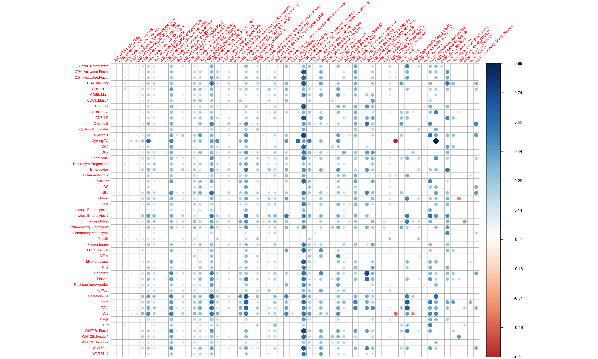
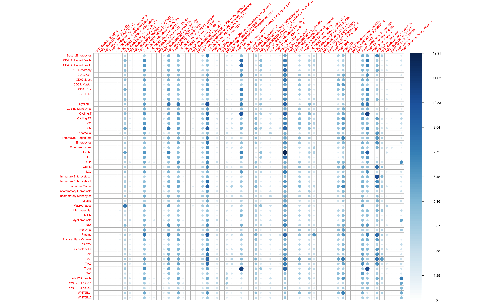
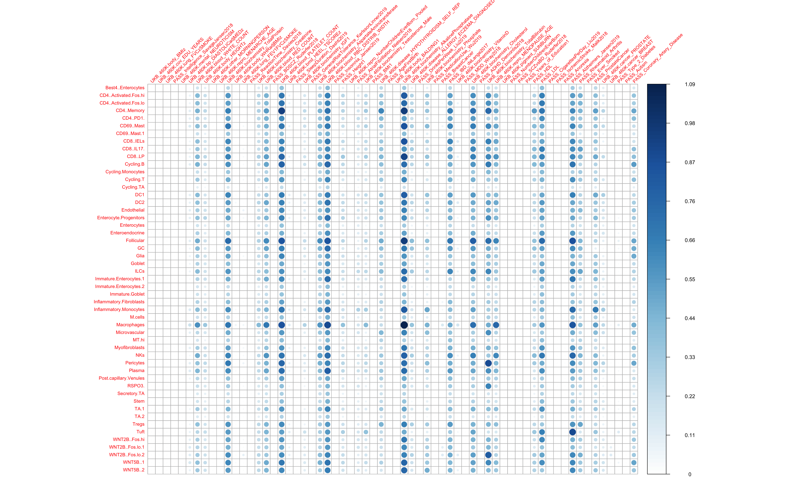

IBD HVI modules 64 traits S-LDSC
Kushal K. Dey, Karthik Jagadeesh and Alkes Price
2/4/2020
Last updated: 2020-02-13
workflowr checks: (Click a bullet for more information)-
✖ R Markdown file: uncommitted changes
The R Markdown file has unstaged changes. To know which version of the R Markdown file created these results, you’ll want to first commit it to the Git repo. If you’re still working on the analysis, you can ignore this warning. When you’re finished, you can runwflow_publishto commit the R Markdown file and build the HTML. -
✔ Environment: empty
Great job! The global environment was empty. Objects defined in the global environment can affect the analysis in your R Markdown file in unknown ways. For reproduciblity it’s best to always run the code in an empty environment.
-
✔ Seed:
set.seed(20200127)The command
set.seed(20200127)was run prior to running the code in the R Markdown file. Setting a seed ensures that any results that rely on randomness, e.g. subsampling or permutations, are reproducible. -
✔ Session information: recorded
Great job! Recording the operating system, R version, and package versions is critical for reproducibility.
-
Great! You are using Git for version control. Tracking code development and connecting the code version to the results is critical for reproducibility. The version displayed above was the version of the Git repository at the time these results were generated.✔ Repository version: 128fb4e
Note that you need to be careful to ensure that all relevant files for the analysis have been committed to Git prior to generating the results (you can usewflow_publishorwflow_git_commit). workflowr only checks the R Markdown file, but you know if there are other scripts or data files that it depends on. Below is the status of the Git repository when the results were generated:
Note that any generated files, e.g. HTML, png, CSS, etc., are not included in this status report because it is ok for generated content to have uncommitted changes.Ignored files: Ignored: .Rhistory Ignored: .Rproj.user/ Ignored: code/.DS_Store Ignored: data/Healthy_gene_score_Top10_Feb1/ Unstaged changes: Modified: analysis/IBD_HVI_modules.Rmd Modified: analysis/IBD_healthy_modules.Rmd Modified: analysis/IBD_scores_comparison.Rmd
Expand here to see past versions:
Gene Modules for HVI
ll = list.files("/Users/kushaldey/Documents/singlecellLDSC/data/Healthy_gene_score_Feb1/")
ll [1] "Best4..Enterocytes.txt" "CD4..Activated.Fos.hi.txt"
[3] "CD4..Activated.Fos.lo.txt" "CD4..Memory.txt"
[5] "CD4..PD1..txt" "CD69..Mast.1.txt"
[7] "CD69..Mast.txt" "CD8..IELs.txt"
[9] "CD8..IL17..txt" "CD8..LP.txt"
[11] "Cycling.B.txt" "Cycling.Monocytes.txt"
[13] "Cycling.T.txt" "Cycling.TA.txt"
[15] "DC1.txt" "DC2.txt"
[17] "Endothelial.txt" "Enterocyte.Progenitors.txt"
[19] "Enterocytes.txt" "Enteroendocrine.txt"
[21] "Follicular.txt" "GC.txt"
[23] "Glia.txt" "Goblet.txt"
[25] "ILCs.txt" "Immature.Enterocytes.1.txt"
[27] "Immature.Enterocytes.2.txt" "Immature.Goblet.txt"
[29] "Inflammatory.Fibroblasts.txt" "Inflammatory.Monocytes.txt"
[31] "M.cells.txt" "Macrophages.txt"
[33] "Microvascular.txt" "MT.hi.txt"
[35] "Myofibroblasts.txt" "NKs.txt"
[37] "Pericytes.txt" "Plasma.txt"
[39] "Post.capillary.Venules.txt" "RSPO3..txt"
[41] "Secretory.TA.txt" "Stem.txt"
[43] "TA.1.txt" "TA.2.txt"
[45] "Tregs.txt" "Tuft.txt"
[47] "WNT2B..Fos.hi.txt" "WNT2B..Fos.lo.1.txt"
[49] "WNT2B..Fos.lo.2.txt" "WNT5B..1.txt"
[51] "WNT5B..2.txt" Size of gene modules
cc= c()
for(mm in 1:length(ll)){
df1 = read.delim(paste0("/Users/kushaldey/Documents/singlecellLDSC/data/Healthy_gene_score_Feb1/", ll[mm]), header=F)
df2 = read.delim(paste0("/Users/kushaldey/Documents/singlecellLDSC/data/HealthyVInflamed_gene_score_Feb1/", ll[mm]), header=F)
cc = rbind(cc, c(mean(df1[,2]), mean(df2[,2])))
}
colnames(cc) = c("Healthy", "HVI")
head(cc) Healthy HVI
[1,] 0.16542076 0.15437769
[2,] 0.05246681 0.06328160
[3,] 0.04640564 0.06465823
[4,] 0.04197487 0.05616391
[5,] 0.03994600 0.05956389
[6,] 0.04041325 0.08075208Load data
IBD_ldsc = get(load("/Users/kushaldey/Documents/singlecellLDSC/output/HVI_gene_score_Feb1_plus_Healthy_plus_All.rda"))
dim(IBD_ldsc)[1] 51 64 3 4tau-star
Roadmap Enhancers linked to Genes
tau_table = IBD_ldsc[,,3,1]
ptau_table = IBD_ldsc[,,3,2]
qtau_table = matrix(qvalue(as.vector(ptau_table))$qvalues, nrow = nrow(tau_table), ncol = ncol(tau_table))
ptau_table2 = matrix(qvalue(as.vector(ptau_table))$pvalues, nrow = nrow(tau_table), ncol = ncol(tau_table))
tau_table[which(qtau_table > 0.1)] = 0corrplot(tau_table, is.corr = F, tl.cex = 0.7, tl.srt = 45)
Expand here to see past versions of unnamed-chunk-6-1.png:
| Version | Author | Date |
|---|---|---|
| d10bea7 | Kushal K Dey | 2020-02-12 |
100kb linked to Genes
tau_table = IBD_ldsc[,,1,1]
ptau_table = IBD_ldsc[,,1,2]
qtau_table = matrix(qvalue(as.vector(ptau_table))$qvalues, nrow = nrow(tau_table), ncol = ncol(tau_table))
ptau_table2 = matrix(qvalue(as.vector(ptau_table))$pvalues, nrow = nrow(tau_table), ncol = ncol(tau_table))
tau_table[which(qtau_table > 0.1)] = 0corrplot(tau_table, is.corr = F, tl.cex = 0.7, tl.srt = 45)
Expand here to see past versions of unnamed-chunk-8-1.png:
| Version | Author | Date |
|---|---|---|
| d10bea7 | Kushal K Dey | 2020-02-12 |
apply(tau_table, 2, mean)[order(apply(tau_table, 2, mean), decreasing = T)][1:10]UKB_460K.biochemistry_AlkalinePhosphatase
0.4598298
UKB_460K.blood_PLATELET_COUNT
0.3656614
UKB_460K.blood_RBC_DISTRIB_WIDTH
0.3381824
UKB_460K.biochemistry_TotalProtein
0.3233291
PASS_IBD_deLange2017
0.2425157
UKB_460K.blood_WHITE_COUNT
0.2423364
UKB_460K.biochemistry_Cholesterol
0.2337235
PASS_Alzheimers_Jansen2019
0.2191292
UKB_460K.biochemistry_Phosphate
0.2110834
UKB_460K.repro_MENOPAUSE_AGE
0.2099284 Enrichment
Roadmap Enhancer
E_table = IBD_ldsc[,,3,3]
pE_table = IBD_ldsc[,,3,4]
qE_table = matrix(qvalue(as.vector(pE_table))$qvalues, nrow = nrow(E_table), ncol = ncol(E_table))
pE_table2 = matrix(qvalue(as.vector(pE_table))$pvalues, nrow = nrow(E_table), ncol = ncol(E_table))
E_table[which(qE_table > 0.01 & pE_table2 > 0.001)] = 1
E_table[E_table < 1.1] = 1
Edif_table = E_table - mean(E_table)
Edif_table[Edif_table < 0] = 0corrplot(Edif_table, is.corr = F, tl.cex = 0.7, tl.srt = 45)
Expand here to see past versions of unnamed-chunk-11-1.png:
| Version | Author | Date |
|---|---|---|
| d10bea7 | Kushal K Dey | 2020-02-12 |
apply(E_table, 2, mean)[order(apply(E_table, 2, mean), decreasing = T)][1:10] PASS_IBD_deLange2017
11.266167
UKB_460K.blood_RBC_DISTRIB_WIDTH
10.789345
UKB_460K.biochemistry_TotalProtein
9.694126
PASS_Rheumatoid_Arthritis
9.628221
PASS_LDL
9.525815
UKB_460K.blood_PLATELET_COUNT
9.463816
UKB_460K.blood_RED_COUNT
9.353220
PASS_Alzheimers_Jansen2019
9.318941
PASS_ProstateCancer
9.250025
UKB_460K.disease_HYPOTHYROIDISM_SELF_REP
9.170629 100kb
E_table = IBD_ldsc[,,1,3]
pE_table = IBD_ldsc[,,1,4]
qE_table = matrix(qvalue(as.vector(pE_table))$qvalues, nrow = nrow(E_table), ncol = ncol(E_table))
pE_table2 = matrix(qvalue(as.vector(pE_table))$pvalues, nrow = nrow(E_table), ncol = ncol(E_table))
E_table[which(qE_table > 0.01 & pE_table2 > 0.001)] = 1
E_table[E_table < 1.1] = 1
Edif_table = E_table - mean(E_table)
Edif_table[Edif_table < 0] = 0corrplot(Edif_table, is.corr = F, tl.cex = 0.7, tl.srt = 45)
Expand here to see past versions of unnamed-chunk-14-1.png:
| Version | Author | Date |
|---|---|---|
| d10bea7 | Kushal K Dey | 2020-02-12 |
apply(E_table, 2, mean)[order(apply(E_table, 2, mean), decreasing = T)][1:10]UKB_460K.biochemistry_AlkalinePhosphatase
1.989379
UKB_460K.blood_RBC_DISTRIB_WIDTH
1.972902
UKB_460K.blood_PLATELET_COUNT
1.953137
PASS_Alzheimers_Jansen2019
1.894875
PASS_LDL
1.863258
UKB_460K.biochemistry_TotalProtein
1.859913
UKB_460K.biochemistry_Cholesterol
1.830927
UKB_460K.biochemistry_TotalBilirubin
1.824228
PASS_IBD_deLange2017
1.807046
UKB_460K.blood_RED_COUNT
1.760860 Session information
sessionInfo()R version 3.5.1 (2018-07-02)
Platform: x86_64-apple-darwin15.6.0 (64-bit)
Running under: macOS High Sierra 10.13.6
Matrix products: default
BLAS: /Library/Frameworks/R.framework/Versions/3.5/Resources/lib/libRblas.0.dylib
LAPACK: /Library/Frameworks/R.framework/Versions/3.5/Resources/lib/libRlapack.dylib
locale:
[1] en_US.UTF-8/en_US.UTF-8/en_US.UTF-8/C/en_US.UTF-8/en_US.UTF-8
attached base packages:
[1] stats graphics grDevices utils datasets methods base
other attached packages:
[1] qvalue_2.14.1 corrplot_0.84 ggplot2_3.1.1
loaded via a namespace (and not attached):
[1] Rcpp_1.0.1 compiler_3.5.1 pillar_1.3.1
[4] git2r_0.23.0 plyr_1.8.4 workflowr_1.1.1
[7] R.methodsS3_1.7.1 R.utils_2.7.0 tools_3.5.1
[10] digest_0.6.19 evaluate_0.12 tibble_2.1.1
[13] gtable_0.3.0 pkgconfig_2.0.2 rlang_0.4.2
[16] yaml_2.2.0 withr_2.1.2 stringr_1.4.0
[19] dplyr_0.8.0.1 knitr_1.20 rprojroot_1.3-2
[22] grid_3.5.1 tidyselect_0.2.5 glue_1.3.1
[25] R6_2.4.0 rmarkdown_1.10 reshape2_1.4.3
[28] purrr_0.3.2 magrittr_1.5 whisker_0.3-2
[31] splines_3.5.1 backports_1.1.4 scales_1.0.0
[34] htmltools_0.3.6 assertthat_0.2.1 colorspace_1.4-1
[37] stringi_1.4.3 lazyeval_0.2.2 munsell_0.5.0
[40] crayon_1.3.4 R.oo_1.22.0 This reproducible R Markdown analysis was created with workflowr 1.1.1